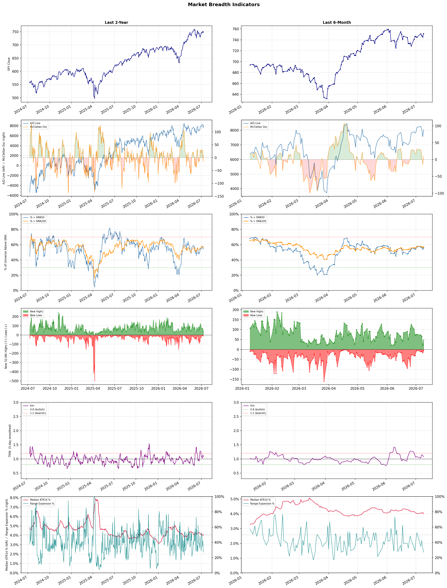

A daily market breadth and sector rotation report for active investors
| Item | Read |
|---|---|
| Regime | Selective Risk-On |
| Risk posture | Selective |
| Universe | 1,344 stocks tracked · 47 new 52-week highs · 30 active swing setups |
| Breadth | 55.6% of tracked stocks are above SMA50 — neutral range, new highs exceed new lows (47 vs 6) |
| Leadership | Airlines, Biotechnology, and REIT - Hotel & Motel |
| Weakest groups | Other Industrial Metals & Mining, Uranium, and Chemicals |
Use this report to prioritize research and chart review; validate entries, stops, liquidity, earnings, and risk before acting.
| Item | Read |
|---|---|
| Primary read | Selective Risk-On regime with Selective risk posture. |
| Research queue | ULCC, AAL, UAL, LUV, JBLU |
| Leadership focus | Airlines, Biotechnology, and REIT - Hotel & Motel |
| Caution list | Other Industrial Metals & Mining, Uranium, and Chemicals |
| Review prompt | Check extension risk, chart location, fundamentals, valuation, and earnings before using any research row. |
| Item | Read |
|---|---|
| Primary read | 1 active risk warnings; use screen output as watchlist input only. |
| Bullish screens | EWTX, NUVL, XENE, BTSG, MPC |
| Bearish screens | PRCT, BXMT, VICI, STLA |
| Alerts / levels | Automated trigger, stop, ATR, liquidity, reward/risk, and event-risk levels are pending future enrichment. |
| Review prompt | Open the linked chart, define trigger and invalidation, then check liquidity and event risk independently. |
Risk Posture: Selective — screen backdrop supports selective research in leading industries
Metric context: McClellan below -50 = elevated selling pressure; below -100 = washout territory. Range Expansion = share of stocks with daily range above their 20-day average. Signal Density = share of tracked names appearing in signal screens.
| Breadth Date | % > SMA50 | % > SMA200 | New Highs | New Lows | McClellan | Median Range | Avg Range | Median ATR14 | Range Expansion | Signal Density |
|---|---|---|---|---|---|---|---|---|---|---|
| 2026-07-09 | 55.6% | 57.1% | 47 | 6 | 9.8 | 3.2% | 3.6% | 4.0% | 27.1% | 4.3% |

Prior comparison date: July 8, 2026
| Metric | Prior | Current | Change |
|---|---|---|---|
| Regime | Selective Risk-On | Selective Risk-On | unchanged |
| Risk Posture | Selective | Selective | unchanged |
| % > SMA50 | 54.1% | 55.6% | +1.5 pts |
| % > SMA200 | 56.3% | 57.1% | +0.8 pts |
| New Highs | 22 | 47 | +25 |
| New Lows | 16 | 6 | +10 |
Top-10 industries entering: none. Top-10 industries leaving: none. New multi-signal long setups: ACMR, AMAT, ANET, ARMK, BTSG, GKOS, MPC, MU, PBF. New multi-signal short setups: BXMT.
| Status | Tickers | Read |
|---|---|---|
| Added | ACMR, AEVA, AMAT, ANET, ARMK, BTSG, BXMT, GKOS | New technical screen matches vs prior report. |
| Removed | ABR, AON, BCRX, BFLY, BNL, CNC, INDV, JBLU | No longer present in today's technical screen matches. |
| Still Active | BRUN, CRON, EWTX, LNG, NET, NUVL, OMC, WRB | Appeared in both current and prior reports. |
| Promoted | none | Model Screen Score improved by at least 15 points. |
| Downgraded | none | Model Screen Score declined by at least 15 points. |
| Direction | Industry | ETF | Prior Rank | Current Rank | Days | Rank Change |
|---|---|---|---|---|---|---|
| Rose | Insurance Brokers | N/A | 95 | 15 | 42 | +80 |
| Rose | Household & Personal Products | XLP | 98 | 19 | 35 | +79 |
| Rose | Insurance - Property & Casualty | KIE | 84 | 7 | 35 | +77 |
| Rose | Restaurants | N/A | 96 | 31 | 35 | +65 |
| Rose | Internet Retail | N/A | 87 | 22 | 28 | +65 |
Bull: The Insurance Brokers sector is likely experiencing rising relative strength due to robust demand for insurance products and ongoing mergers and acquisitions (M&A) activity, as highlighted in the Yahoo Finance article. Despite recent fears surrounding AI disruptions and stock selloffs, the Q1 earnings highlights from companies like Brown & Brown (NYSE:BRO) suggest that strong financial performance and strategic consolidation are positioning the sector for growth, making it an attractive investment opportunity.
Bear: While the bull thesis emphasizes strong demand and M&A activity, it overlooks the significant risks posed by emerging technologies like AI, which could disrupt traditional brokerage models and erode profit margins. Additionally, the recent selloff and declining valuations indicate that the market may be pricing in a shift in the cycle, suggesting that the current relative strength may not be sustainable as investors reassess the long-term viability of these firms in an evolving landscape.
Verdict: The Insurance Brokers sector is experiencing rising relative strength primarily due to strong demand for insurance products and active M&A activity, which is enhancing market consolidation and financial performance. However, investors should remain cautious of the significant risk posed by emerging technologies like AI, which could disrupt traditional brokerage models and impact profit margins, potentially leading to a reassessment of valuations in the long term. Therefore, while the sector presents attractive investment opportunities, careful monitoring of technological advancements and their implications is essential.
Sources: Google News
Bull: The Household & Personal Products sector is likely experiencing rising relative strength due to its defensive nature, which tends to outperform during periods of economic uncertainty, as indicated by the mixed performance of consumer stocks amid broader market volatility, including geopolitical tensions like those with Iran. Additionally, the positive sentiment surrounding dividend-paying stocks, as highlighted by the article on a "Dividend King" expected to continue outperforming, suggests that investors are seeking stable income and reliability in their portfolios, further bolstering the appeal of household and personal products companies like Procter & Gamble.
Bear: While the defensive nature of the Household & Personal Products sector may provide some stability during economic uncertainty, the recent mixed performance of consumer stocks indicates underlying weaknesses that could be exacerbated by rising inflation and shifting consumer spending patterns. Additionally, the mention of "newly overvalued stocks" suggests that many companies within this sector may be trading at unsustainable valuations, raising the risk of corrections as market sentiment shifts. Furthermore, geopolitical tensions, such as those with Iran, could lead to supply chain disruptions and increased costs, further pressuring profit margins for these companies.
Verdict: The Household & Personal Products sector is gaining relative strength as investors seek stability and reliable income through dividend-paying stocks amid economic uncertainty and market volatility. However, the key risk lies in rising inflation and potential supply chain disruptions due to geopolitical tensions, which could pressure profit margins and lead to corrections in overvalued stocks. Investors should closely monitor inflation trends and geopolitical developments to assess the sustainability of this sector's performance.
Sources: Yahoo Finance, Google News
Bull: The Insurance - Property & Casualty sector is experiencing rising relative strength due to a combination of digitalization and exposure growth, as highlighted in recent reports that identify key players like MGIC Investment and emphasize the industry's adaptation to changing market conditions. Additionally, the positive sentiment reflected in headlines such as "Insurance Stocks Gain Ground in Turbulent Markets" suggests that investors are increasingly viewing this sector as a stable investment amid economic uncertainties, further bolstered by the recognition of ETFs like KIE as strong investment vehicles. This trend indicates a robust demand for property and casualty insurance products, positioning the sector favorably for continued growth.
Bear: While the rising relative strength and digitalization trends in the Property & Casualty insurance sector may appear promising, several fundamental challenges loom large. Increased competition from insurtech companies and potential regulatory changes could compress margins, while rising claims costs due to climate change and economic uncertainty may erode profitability. Additionally, the perception of stability in turbulent markets could be misleading, as investors may overlook the inherent risks associated with underwriting in a volatile environment, leading to potential overvaluation of ETFs like KIE.
Verdict: The Property & Casualty insurance sector's rising relative strength is primarily driven by digitalization efforts and increased demand for insurance products amid economic uncertainties, positioning key players for growth. However, investors should remain cautious of the fundamental risks posed by rising claims costs due to climate change and heightened competition from insurtech firms, which could pressure margins and profitability. It is essential to monitor these risks closely to avoid potential overvaluation in this evolving landscape.
Sources: Yahoo Finance, Google News
Bull: The rising relative strength of the restaurant industry can be attributed to a combination of resilient consumer demand and a sector-wide recovery following recent pullbacks. Despite a 6.6% drop in CAVA Group, positive sentiment remains strong, as highlighted by Barron's article on appealing restaurant stocks and Investor's Business Daily noting a 20% surge in the industry this year, driven by robust performance from key players. Additionally, the Motley Fool's focus on investment opportunities in restaurant ETFs for 2026 suggests a long-term bullish outlook, indicating that investors are recognizing the potential for growth and stability in the sector.
Bear: While the restaurant industry's rising relative strength may seem promising, it is crucial to consider the underlying economic pressures that could undermine this growth. The recent headlines indicate a significant valuation decline for restaurant companies in 2025, suggesting that the current surge may be more of a short-term rebound rather than a sustainable trend, especially as consumer spending may be strained by inflationary pressures and changing dining habits. Additionally, the 6.6% drop in CAVA Group highlights the volatility and potential overvaluation in the sector, which could lead to further corrections as investors reassess the long-term viability of restaurant stocks.
Verdict: The restaurant industry's rising strength can be fundamentally attributed to resilient consumer demand and a sector-wide recovery, as evidenced by significant surges in key players and positive investor sentiment. However, the key risk lies in the potential for economic pressures, such as inflation and changing consumer spending habits, which could undermine this growth and lead to volatility, as demonstrated by the recent decline in CAVA Group's stock. Investors should remain cautious and closely monitor economic indicators to assess the sustainability of this upward trend.
Sources: Google News
Bull: The Internet Retail sector is experiencing a rising relative strength due to robust growth projections highlighted in recent analyses, such as "Best E-Commerce Stocks for 2026" from The Motley Fool, which suggests a strong future for e-commerce investments. Additionally, the positive Q4 highlights for companies like Wayfair indicate that consumer spending in online retail remains resilient, further bolstered by the increasing integration of AI technologies in retail, as noted in the Morningstar article on the best AI stocks. This combination of favorable growth expectations and technological advancements positions Internet Retail as a compelling investment opportunity.
Bear: While the rising relative strength and growth projections for the Internet Retail sector may appear promising, several underlying challenges could undermine this optimism. The e-commerce market is becoming increasingly saturated, leading to fierce competition and margin compression, particularly for smaller players. Additionally, the reliance on AI technologies may not yield the expected efficiencies or consumer engagement, especially as privacy concerns and regulatory scrutiny around data usage intensify, potentially stifling growth and innovation in the sector.
Verdict: The Internet Retail sector's rising strength is fundamentally driven by robust growth projections and the integration of AI technologies, which enhance consumer engagement and operational efficiencies. However, the key risk lies in market saturation and increasing competition, which could lead to margin compression and hinder profitability, particularly for smaller players. Investors should closely monitor these competitive dynamics and regulatory developments as they evaluate opportunities in this space.
Sources: Google News
| Direction | Industry | ETF | Prior Rank | Current Rank | Days | Rank Change |
|---|---|---|---|---|---|---|
| Fell | Aerospace & Defense | ITA | 10 | 83 | 42 | -73 |
| Fell | Other Industrial Metals & Mining | N/A | 16 | 88 | 42 | -72 |
| Fell | Steel | SLX | 8 | 79 | 42 | -71 |
| Fell | Copper | COPX | 14 | 85 | 35 | -71 |
| Fell | Rental & Leasing Services | N/A | 13 | 72 | 42 | -59 |
Bear: While the bull analyst points to a temporary pullback as a recalibration of expectations, the reality is that the Aerospace & Defense sector faces significant headwinds that could undermine its long-term growth prospects. Rising inflation and interest rates could pressure defense budgets, leading to potential cuts in government spending, particularly if economic conditions worsen. Additionally, the focus on emerging technologies in defense, such as AI, may not translate into immediate revenue growth for traditional defense contractors, leaving them vulnerable to market volatility and shifting investor sentiment.
Bull: The Aerospace & Defense sector is currently experiencing a decline in relative strength compared to other industries primarily due to a broader market rotation away from defense stocks following a significant surge in government spending on military capabilities and AI technologies. While recent headlines highlight a robust commitment from NATO to increase defense spending to 5% of GDP by 2035 and the ongoing rearmament cycle, investors may be recalibrating their expectations as the initial excitement fades, leading to a temporary pullback in stock prices despite strong long-term fundamentals. Additionally, the focus on European defense spending surges may divert attention and capital away from U.S.-based defense stocks, contributing to the relative weakness in the sector.
Verdict: The Aerospace & Defense sector's current decline is primarily driven by a market rotation away from defense stocks as initial excitement over increased government spending on military capabilities and AI technologies wanes. Key risks include rising inflation and interest rates, which could pressure defense budgets and lead to potential cuts in government spending, undermining long-term growth prospects for traditional defense contractors. Investors should closely monitor economic indicators and government budget announcements to assess the sustainability of defense spending in the face of these challenges.
Sources: Yahoo Finance, Google News
Bear: While the bull analyst attributes the relative weakness in the Other Industrial Metals & Mining sector to a shift in investor focus, this overlooks fundamental issues facing the sector, such as declining demand from traditional industrial applications and increasing regulatory pressures. Additionally, the rising interest in specialized segments like copper and AI-driven technologies may not be a temporary trend but rather a long-term pivot that could further marginalize the broader industrial metals category, exacerbating its declining relative strength and limiting growth opportunities.
Bull: The relative weakness in the Other Industrial Metals & Mining sector can likely be attributed to a shift in investor focus towards more specialized segments, such as copper and AI-powered mining technologies, as highlighted in recent articles from The Motley Fool and the Boston Consulting Group. Additionally, the emphasis on top stock picks in the broader metals sector by BofA suggests a preference for companies with strong growth potential, which may be overshadowing the broader industrial metals category, leading to its declining relative strength.
Verdict: The decline in the Other Industrial Metals & Mining sector is primarily driven by a structural shift in investor interest towards specialized segments such as copper and AI-powered mining technologies, which are perceived to offer stronger growth potential. However, a key risk lies in the fundamental challenges facing the sector, including declining demand from traditional industrial applications and increasing regulatory pressures, which could further marginalize broader industrial metals and stifle recovery opportunities. Investors should closely monitor these dynamics to assess potential impacts on portfolio allocations.
Sources: Google News
Bear: While the recent headlines suggest a bullish sentiment around the steel industry, the underlying fundamentals indicate significant challenges that could undermine this optimism. The rising interest in alternative materials, such as copper, driven by technological advancements and sustainability concerns, may lead to a long-term decline in demand for steel. Furthermore, despite the legislative support for steelmakers, the industry's reliance on cyclical demand and potential economic downturns could exacerbate the relative strength decline, making the current highs in the VanEck Steel ETF (SLX) appear unsustainable.
Bull: The steel industry is currently experiencing a relative strength decline primarily due to broader market trends and competitive pressures from other sectors, such as copper, which are highlighted in recent headlines. While the VanEck Steel ETF (SLX) has hit new 52-week highs, the focus on AI and other emerging technologies may be diverting investor attention and capital away from steel, as indicated by headlines discussing copper stocks and industry challenges. Additionally, while recent legislative support for steelmakers is a positive signal, it may not be enough to counteract the overall market sentiment favoring growth in alternative materials and technologies.
Verdict: The steel industry's current decline is primarily driven by shifting investor focus towards alternative materials like copper, which are gaining traction due to technological advancements and sustainability trends. While recent legislative support offers some optimism, the key risk lies in the cyclical nature of steel demand and potential economic downturns, which could render the current highs in the VanEck Steel ETF (SLX) unsustainable. Investors should closely monitor these macroeconomic factors and the evolving competitive landscape to make informed decisions.
Sources: Yahoo Finance, Google News
Bear: While the bull analyst highlights concerns over global manufacturing and competition from other metals, it's important to consider that copper's recent price surge may be driven by speculative trading rather than fundamental demand. Furthermore, the headlines suggest a growing narrative around copper as a key player in the AI and green energy sectors; however, if global economic conditions deteriorate, the anticipated demand for copper in these emerging technologies could quickly evaporate, leading to a sharp correction in the COPX ETF. Additionally, the falling relative-strength trend indicates weakening investor confidence, suggesting that the current enthusiasm for copper may be overblown and unsustainable in the face of potential economic headwinds.
Bull: Copper's relative strength is likely falling due to concerns over global manufacturing weakening, as highlighted in the headline "If Global Manufacturing Weakens, Here’s What Happens to This Copper ETF." This sentiment is compounded by the competitive landscape of metals, with discussions around copper's performance relative to gold and silver in the context of the AI boom, suggesting that investors may be reallocating their capital to other metals perceived as more resilient or lucrative in the current environment. Additionally, while copper has shown impressive gains, the headlines indicate a shift in focus towards other sectors, such as software and AI, which may be diverting attention and investment away from copper-related assets.
Verdict: The copper industry is currently experiencing a downward trend primarily due to concerns over weakening global manufacturing, which has led to reduced demand expectations and a shift in investor focus towards sectors like AI and software. The key risk from the bear case is that if economic conditions worsen, the speculative gains in copper could rapidly reverse, resulting in a significant correction in copper-related assets like the COPX ETF. Investors should closely monitor macroeconomic indicators and global manufacturing data to gauge the sustainability of copper's demand amid these shifting dynamics.
Sources: Yahoo Finance, Google News
Bear: While the bull analyst highlights broader market concerns and sector rotation as key factors in the Rental & Leasing Services industry's decline, it is crucial to recognize that the industry's fundamentals are also deteriorating. Increased competition, rising interest rates, and inflationary pressures are squeezing profit margins and reducing consumer spending power, which could lead to a prolonged downturn in demand for rental services. Furthermore, the focus on REITs and automotive leasing may not only divert attention but also indicate a fundamental shift in investor preference away from traditional rental services, suggesting that the industry's challenges are more structural than cyclical.
Bull: The Rental & Leasing Services industry is experiencing a decline in relative strength primarily due to broader market concerns affecting investor sentiment, as evidenced by Avis Budget Group's significant drop of 5.9% amid sector-wide selling. Additionally, the focus on strong performance from REITs and the automotive leasing strength highlighted in the headlines may divert investor attention away from traditional rental services, suggesting a shift in preference toward sectors perceived as more resilient or growth-oriented. This sector rotation, combined with potential macroeconomic headwinds, has likely contributed to the industry's relative underperformance.
Verdict: The Rental & Leasing Services industry's decline is primarily driven by deteriorating fundamentals, including increased competition, rising interest rates, and inflationary pressures that are constraining profit margins and consumer spending. The key risk highlighted by the bear case is that these challenges may represent a structural shift in investor preference away from traditional rental services, indicating a potential prolonged downturn in demand. Investors should closely monitor economic indicators and competitive dynamics to assess the industry's recovery potential.
Sources: Google News
| Industry | Rank | ETF | 7d | 14d | 28d | 42d | Chg 42d | Size | 20D | 60D | Composite | Active Setups |
|---|---|---|---|---|---|---|---|---|---|---|---|---|
| Airlines | 1 | N/A | 2 | 1 | 14 | 15 | +14 | 8 | 15.7% | 37.9% | 0.929 | 0 |
| Biotechnology | 2 | XBI | 3 | 7 | 57 | 23 | +21 | 93 | 26.0% | 35.0% | 0.928 | 1 |
| REIT - Hotel & Motel | 3 | XLRE | 9 | 5 | 2 | 9 | +6 | 9 | 52.2% | 87.9% | 0.928 | 0 |
| Health Information Services | 4 | N/A | 8 | 12 | 21 | 29 | +25 | 12 | 21.4% | 42.4% | 0.918 | 0 |
| Diagnostics & Research | 5 | N/A | 4 | 2 | 13 | 18 | +13 | 16 | 17.7% | 41.1% | 0.910 | 0 |
| Medical Care Facilities | 6 | IHF | 7 | 10 | 37 | 50 | +44 | 10 | 20.3% | 28.0% | 0.898 | 0 |
| Insurance - Property & Casualty | 7 | KIE | 5 | 17 | 72 | 83 | +76 | 8 | 19.3% | 24.6% | 0.894 | 1 |
| Advertising Agencies | 8 | N/A | 10 | 24 | 41 | 49 | +41 | 7 | 15.1% | 58.0% | 0.879 | 1 |
| Healthcare Plans | 9 | IHF | 1 | 3 | 4 | 12 | +3 | 10 | 7.4% | 60.5% | 0.878 | 0 |
| Banks - Diversified | 10 | N/A | 11 | 9 | 16 | 22 | +12 | 16 | 8.2% | 13.2% | 0.857 | 0 |
Rank columns (7d–42d) show the industry's rank that many trading days ago — lower is stronger. Chg 42d = rank change vs 42 trading days ago — positive means the industry moved up. 20D and 60D are the mean stock return within the industry over that period. Active Setups: count of today's swing-trade candidates from this industry appearing across all signal screens.
| Industry | Rank | ETF | 7d | 14d | 28d | 42d | Chg 42d | Size | 20D | 60D | Composite | Active Setups |
|---|---|---|---|---|---|---|---|---|---|---|---|---|
| Other Industrial Metals & Mining | 88 | N/A | 82 | 77 | 82 | 16 | -72 | 21 | -10.3% | -13.0% | 0.105 | 1 |
| Uranium | 87 | URA | 88 | 86 | 96 | 89 | +2 | 6 | -4.6% | -20.9% | 0.116 | 0 |
| Chemicals | 86 | N/A | 87 | 84 | 90 | 55 | -31 | 8 | -14.7% | -22.7% | 0.117 | 0 |
| Copper | 85 | COPX | 80 | 76 | 81 | 20 | -65 | 6 | -6.0% | -15.5% | 0.133 | 0 |
| Gold | 84 | GDX | 86 | 87 | 97 | 74 | -10 | 27 | -3.2% | -25.1% | 0.147 | 0 |
| Aerospace & Defense | 83 | ITA | 66 | 80 | 34 | 10 | -73 | 26 | -10.6% | -13.3% | 0.164 | 0 |
| Industrial Distribution | 82 | N/A | 71 | 47 | 70 | 92 | +10 | 6 | -5.8% | -12.8% | 0.178 | 0 |
| Oil & Gas E&P | 81 | XOP | 85 | 81 | 84 | 84 | +3 | 26 | -6.8% | -11.6% | 0.184 | 0 |
| Utilities - Renewable | 80 | N/A | 75 | 53 | N/A | N/A | N/A | 7 | -12.3% | -1.0% | 0.190 | 0 |
| Steel | 79 | SLX | 78 | 65 | 9 | 8 | -71 | 5 | -13.1% | -0.5% | 0.226 | 0 |
Rank columns (7d–42d) show the industry's rank that many trading days ago — lower is stronger. Chg 42d = rank change vs 42 trading days ago — positive means the industry moved up. 20D and 60D are the mean stock return within the industry over that period. Active Setups: count of today's swing-trade candidates from this industry appearing across all signal screens.
These are research candidates from top-ranked stocks, capped at five names per industry to avoid over-concentration. Returns shown (60D, 120D, 250D) are historical — they reflect where prices have already moved, not forward expectations. Extension Risk flags names that may require extra patience or a better entry point. They are not buy signals.
Chart: TV = TradingView chart (opens in browser); PDF = local chart file (if downloaded).
| Ticker | Name | Industry | Industry Rank | Market Cap | 60D Hist | 120D Hist | 250D Hist | Extension Risk | Research Reason | Chart |
|---|---|---|---|---|---|---|---|---|---|---|
| ULCC | Frontier Group | Airlines | 1 | N/A | 105.9% | 54.9% | 76.6% | Very extended | Top-ranked in industry; very extended | TV |
| AAL | American Airlines | Airlines | 1 | N/A | 51.9% | 12.7% | 31.8% | Extended | Top-ranked in industry; extended | TV |
| UAL | United Airlines | Airlines | 1 | N/A | 35.6% | 16.5% | 40.8% | Constructive | Top-ranked in industry | TV |
| LUV | Southwest Airlines | Airlines | 1 | N/A | 24.8% | 15.7% | 31.8% | Constructive | Top-ranked in industry | TV |
| JBLU | JetBlue Airways | Airlines | 1 | N/A | 23.6% | 22.3% | 29.8% | Constructive | Top-ranked in industry | TV |
| ABSI | Absci Corp | Biotechnology | 2 | N/A | 276.1% | 242.4% | 320.1% | Very extended | Top-ranked in industry; very extended | TV |
| SLS | Sellas Life Sciences | Biotechnology | 2 | N/A | 183.8% | 228.7% | 611.1% | Very extended | Top-ranked in industry; very extended | TV |
| QURE | uniQure NV | Biotechnology | 2 | N/A | 148.2% | 99.0% | 198.9% | Very extended | Top-ranked in industry; very extended | TV |
| DFTX | Definium Therapeutics | Biotechnology | 2 | N/A | 117.8% | 222.6% | 498.1% | Very extended | Top-ranked in industry; very extended | TV |
| MRNA | Moderna | Biotechnology | 2 | N/A | 51.1% | 88.7% | 123.3% | Extended | Top-ranked in industry; extended | TV |
| SVC | Service Properties Trust | REIT - Hotel & Motel | 3 | N/A | 578.3% | 314.7% | 240.5% | Very extended | Top-ranked in industry; very extended | TV |
| RLJ | RLJ Lodging Trust | REIT - Hotel & Motel | 3 | N/A | 41.2% | 50.3% | 45.9% | Constructive | Top-ranked in industry | TV |
| INN | Summit Hotel Properties Inc | REIT - Hotel & Motel | 3 | N/A | 36.1% | 40.3% | 16.3% | Constructive | Top-ranked in industry | TV |
| APLE | Apple Hospitality REIT Inc | REIT - Hotel & Motel | 3 | N/A | 31.2% | 33.0% | 31.0% | Constructive | Top-ranked in industry | TV |
| PEB | Pebblebrook Hotel Trust | REIT - Hotel & Motel | 3 | N/A | 30.7% | 49.6% | 62.0% | Constructive | Top-ranked in industry | TV |
| HNGE | Hinge Health | Health Information Services | 4 | N/A | 137.7% | 107.5% | 103.7% | Very extended | Top-ranked in industry; very extended | TV |
| TXG | 10x Genomics | Health Information Services | 4 | N/A | 82.8% | 106.0% | 241.5% | Extended | Top-ranked in industry; extended | TV |
| TDOC | Teladoc Health | Health Information Services | 4 | N/A | 76.4% | 39.3% | 4.5% | Extended | Top-ranked in industry; extended | TV |
| TEM | Tempus AI | Health Information Services | 4 | N/A | 33.8% | -11.2% | 3.2% | Constructive | Top-ranked in industry | TV |
| CERT | Certara | Health Information Services | 4 | N/A | 17.3% | -27.1% | -41.0% | Constructive | Top-ranked in industry | TV |
These are technical screen matches from existing signal files. They are not trade recommendations. Trigger, stop, ATR, liquidity, reward/risk, and event risk still require separate validation until those inputs are available.
Model Screen Score is weighted by signal count, industry rank, freshness, and setup type. It is not a probability of profit, expected return, or suitability rating. Industry cap: max 3 candidates per industry.
Signal glossary: Momentum Pullback = stock in an uptrend that has pulled back 10–30% and shows re-entry conditions. MA Compression = short- and long-term moving averages converging, often preceding a directional move. Three-Day Up/Down = three consecutive closes in the same direction. New 52Wk High/Low = price reached a new annual extreme.
Chart: TV = TradingView chart (opens in browser); PDF = local chart file (if downloaded).
| Ticker | Industry | Setups | Close | Industry Rank | Signal Count | Model Screen Score | Reason | Chart |
|---|---|---|---|---|---|---|---|---|
| EWTX | Biotechnology | New 52Wk High; Three-Day Up | 48.35 | 2 | 2 | 100 | Multi-signal; top industry breakout | TV |
| NUVL | Biotechnology | New 52Wk High; Three-Day Up | 123.83 | 2 | 2 | 100 | Multi-signal; top industry breakout | TV |
| XENE | Biotechnology | New 52Wk High; Three-Day Up | 70.96 | 2 | 2 | 100 | Multi-signal; top industry breakout | TV |
| BTSG | Health Information Services | New 52Wk High; Three-Day Up | 71.58 | 4 | 2 | 93 | Multi-signal; top industry breakout | TV |
| MPC | Oil & Gas Refining & Marketing | New 52Wk High; Three-Day Up | 283.30 | 11 | 2 | 85 | Multi-signal; new-high strength | TV |
| PBF | Oil & Gas Refining & Marketing | New 52Wk High; Three-Day Up | 53.31 | 11 | 2 | 85 | Multi-signal; new-high strength | TV |
| PSX | Oil & Gas Refining & Marketing | New 52Wk High; Three-Day Up | 189.82 | 11 | 2 | 85 | Multi-signal; new-high strength | TV |
| NET | Software - Infrastructure | New 52Wk High; Three-Day Up | 275.80 | 12 | 2 | 85 | Multi-signal; new-high strength | TV |
| ANET | Computer Hardware | New 52Wk High; Three-Day Up | 184.69 | 18 | 2 | 77 | Multi-signal; new-high strength | TV |
| ACMR | Semiconductor Equipment & Materials | Momentum Pullback; Three-Day Up | 106.04 | 23 | 2 | 77 | Multi-signal; pullback setup | TV |
| AMAT | Semiconductor Equipment & Materials | Momentum Pullback; Three-Day Up | 588.66 | 23 | 2 | 77 | Multi-signal; pullback setup | TV |
| GKOS | Medical Devices | New 52Wk High; Three-Day Up | 155.07 | 28 | 2 | 70 | Multi-signal; new-high strength | TV |
| MU | Semiconductors | Momentum Pullback; Three-Day Up | 991.64 | 30 | 2 | 70 | Multi-signal; pullback setup | TV |
| UMC | Semiconductors | Momentum Pullback; Three-Day Up | 24.86 | 30 | 2 | 70 | Multi-signal; pullback setup | TV |
| LNG | Oil & Gas Midstream | Momentum Pullback; Three-Day Up | 261.29 | 36 | 2 | 70 | Multi-signal; pullback setup | TV |
| ARMK | Specialty Business Services | New 52Wk High; Three-Day Up | 57.88 | 53 | 2 | 65 | Multi-signal; new-high strength | TV |
| VIRT | Capital Markets | New 52Wk High; Three-Day Up | 66.82 | 55 | 2 | 65 | Multi-signal; new-high strength | TV |
| WT | Asset Management | New 52Wk High; Three-Day Up | 19.86 | 57 | 2 | 65 | Multi-signal; new-high strength | TV |
| PENG | Information Technology Services | New 52Wk High; Three-Day Up | 81.39 | 66 | 2 | 55 | Multi-signal; new-high strength | TV |
| WYFI | Information Technology Services | Momentum Pullback; Three-Day Up | 38.84 | 66 | 2 | 55 | Multi-signal; pullback setup | TV |
| TAC | Utilities - Independent Power Producers | MA Compression; Three-Day Up | 14.52 | 61 | 2 | 50 | Multi-signal; compression setup | TV |
| WRB | Insurance - Property & Casualty | MA Compression | 71.82 | 7 | 1 | 53 | Single-signal; top industry setup | TV |
| AEVA | Software - Infrastructure | Momentum Pullback | 22.03 | 12 | 1 | 50 | Single-signal; pullback setup | TV |
| BRUN | Software - Infrastructure | Momentum Pullback | 30.20 | 12 | 1 | 50 | Single-signal; pullback setup | TV |
| OMC | Advertising Agencies | MA Compression | 80.83 | 8 | 1 | 45 | Single-signal; top industry setup | TV |
| CRON | Drug Manufacturers - Specialty & Generic | MA Compression | 2.78 | 14 | 1 | 45 | Single-signal; compression setup | TV |
Bearish setups — stocks making new lows or showing persistent downside patterns. Validate carefully before acting.
| Ticker | Industry | Setups | Close | Industry Rank | Signal Count | Model Screen Score | Reason | Chart |
|---|---|---|---|---|---|---|---|---|
| PRCT | Medical Devices | New 52Wk Low; Three-Day Down | 19.75 | 28 | 2 | 40 | Multi-signal; new-low weakness | TV |
| BXMT | REIT - Mortgage | New 52Wk Low; Three-Day Down | 16.87 | 65 | 2 | 25 | Multi-signal; new-low weakness | TV |
| VICI | REIT - Diversified | New 52Wk Low; Three-Day Down | 25.93 | 71 | 2 | 25 | Multi-signal; new-low weakness | TV |
| STLA | Auto Manufacturers | New 52Wk Low; Three-Day Down | 5.33 | 75 | 2 | 25 | Multi-signal; new-low weakness | TV |
How To Use This Report
| Use | Purpose |
|---|---|
| Market map | Start with breadth, regime, risk warnings, and what changed since the prior report. |
| Industry scan | Use leading, deteriorating, rising, and declining industries to focus research. |
| Research queue | Treat long-term candidates as names for deeper fundamental, valuation, and chart review. |
| Technical review | Treat bullish and bearish screen matches as watchlist inputs that require independent trigger, stop, liquidity, and event-risk checks. |
| Source follow-up | Use chart links and source files to verify raw inputs before relying on any row. |
What This Report Is Not
| Not | Meaning |
|---|---|
| Investment advice | The report does not evaluate personal objectives, risk tolerance, tax situation, account type, or suitability. |
| Buy/sell recommendation | Named tickers are research candidates or screen matches, not recommendations to transact. |
| Price target | The report does not provide fair value estimates, targets, or expected returns. |
| Trade plan | Trigger, stop, sizing, reward/risk, liquidity, and event-risk review remain separate user work. |
| Performance claim | Model Screen Score is not validated historical performance or a forecast of future results. |
| Item | Note |
|---|---|
| Version | Daily Report Methodology v1 |
| Model Screen Score | Screen-fit rank based on signal count, industry rank, freshness, and setup type. |
| Not predictive proof | The score is not expected return, probability of profit, historical validation, or suitability analysis. |
| Industry ranks | Composite industry ranks use existing daily ranking outputs and historical rank columns when available. |
| Research candidates | Long-term rows are research candidates from ranked stocks and leading industries, with historical returns labeled as historical only. |
| Technical matches | Bullish and bearish rows are screen matches requiring independent chart, trigger, stop, liquidity, and event-risk review. |
| Source | Status | Rows | Path |
|---|---|---|---|
| Market breadth | present | 1254 | breadth_20260709.csv |
| Industry composite rankings | present | 88 | all_industry_composite_20260709.csv |
| Top ranked stocks | present | 189 | top_ranked_composite_20260709.csv |
| All ranked stocks | present | 1344 | all_stocks_composite_sorted_20260709.csv |
| Top momentum pullbacks | present | 1491 | top_momentum_pullbacks_20260709.csv |
| MA compression | present | 1491 | ma_compression_stocks_20260709.csv |
| Three-day up/down | present | 98 | three_day_up_down_stocks_20260709.csv |
| New 52-week members | present | 53 | breadth_new_52wk_members_20260709.csv |
This report is generated from automated technical screens and is for informational and research purposes only. It is not investment advice, a solicitation, or a recommendation to buy or sell any security. Past performance is not indicative of future results. You are solely responsible for your own investment decisions. Consult a licensed financial advisor before acting on any information herein.